歷史的轉折，從重新觀看開始
從古代早期帝國
從熟悉的中世紀印象出發，沿著地圖、文化與歷史命名，練習理解延續與變化。
看圖時，可以從這四個小問題開始 圖裡有什麼？ → 哪些細節值得注意？ → 跟這一章有什麼關係？ → 還有哪些事情，光看圖無法知道？
開始這門課以前，我們先不急著增加新的知識，而是把自己已經記得的中世紀找回來。
有人想到莊園、封建制度、騎士、領主與農奴；有人想到教會、十字軍或黑死病；也有人只留下城堡、盔甲和「黑暗時代」的模糊畫面。這些記憶都是真實的學習經驗，但它們可能來自不同世紀、不同地區，也可能被課本壓縮在同一幅畫面裡。
把記憶說出來，不是為了立刻判斷誰對誰錯，而是先看見：我們原先用哪些人物、事件和圖像拼成「中世紀」？哪些部分很清楚，哪些部分其實還沒有時間、空間或材料的支持？
這份記憶清單會成為後面八章的起點。等我們讀過地圖、人物與材料後，再回來看看：原來的印象有哪些被保留、被補充，或被重新理解？
延伸閱讀與材料觀察
主視覺一：騎士冊封的想像
一名騎士跪下，由女性領主將寶劍搭在他的肩上。這張畫很接近我們一開始對中世紀的畫面感：騎士、誓言、榮譽與階級同時出現。
但《冊封禮》是埃德蒙・布萊爾・雷頓在 1901 年創作的後世歷史想像，並不是中世紀現場紀錄。它適合拿來問：我們記得的中世紀，有多少其實來自後來的繪畫、電影與故事？
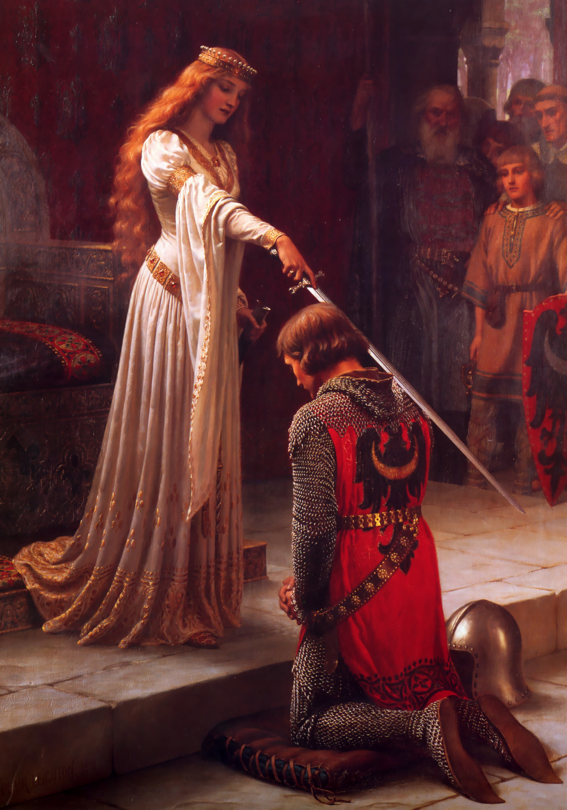
開啟大圖 ↗ 《冊封禮》，1901
Edmund Blair Leighton, The Accolade , 1901 · 圖像來源 （公眾領域）
主視覺二：莊園不是一棟房子
從斜上方看，領主宅邸、村落、教堂、穀倉、水磨坊、農田與共同牧地，組成一個彼此相連的生活與生產空間。我們試著沿著道路與溪流，辨認糧食在哪裡生產、儲存與加工，再追問土地由誰使用、收成與勞動如何分配。
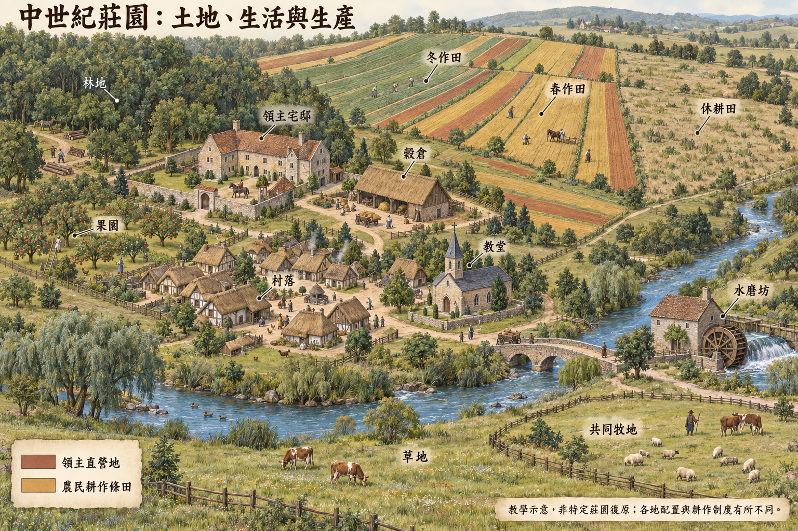
開啟大圖 ↗ 中世紀莊園：土地、生活與生產（繁體中文示意圖）
本課程以 AI 製作的教學示意；非特定莊園復原，各地配置與耕作制度有所不同。
怎麼讀這張圖？ 先找村落與田地，再找到溪流旁的水磨坊。田間兩種顏色區分領主直營地與農民耕作條田：領主直營地也可能由農民承擔勞役耕種，不表示領主親自下田。冬作田、春作田與休耕田呈現三圃輪作的概念；用途會輪替，不是固定不變的三塊土地。
這是以中世紀部分歐洲地區的莊園與開放田制為概念製作的教學示意，不是特定莊園的實景復原，也不能代表所有地區、所有時期。農民的身分與義務有所差異，不能把所有農民都直接視為農奴；莊園亦可能與外部市場交易。
對照材料：從立體場景回到莊園平面
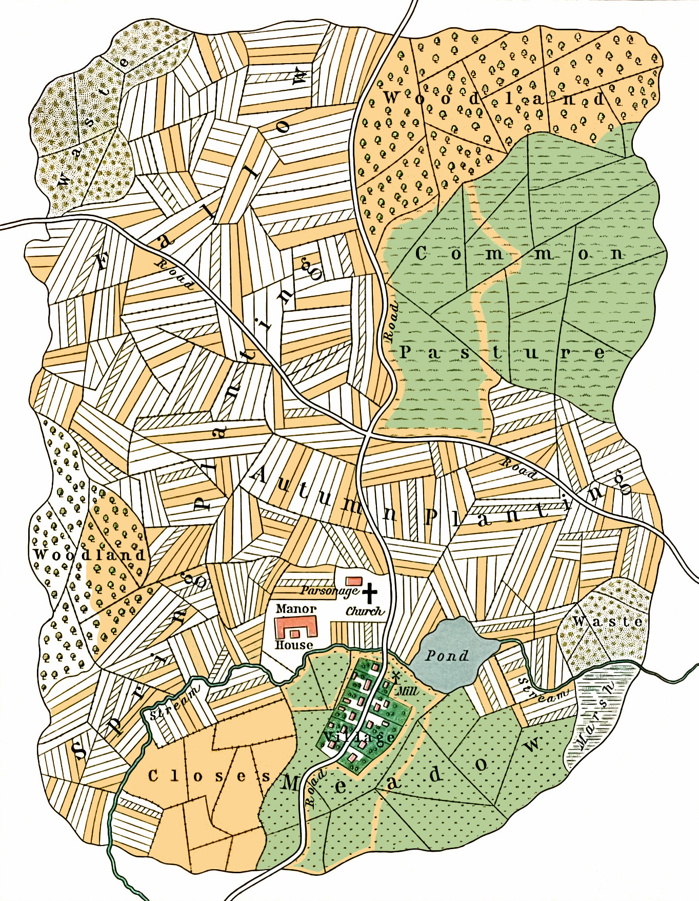
開啟大圖 ↗ 中世紀開放田制與莊園平面示意
William R. Shepherd, Historical Atlas , 1923 衍生圖 · 圖像來源 （公眾領域）
這張依歷史研究繪製的虛構莊園平面，保留作為對照材料。試著找出兩張圖共同出現的空間，再辨認各自省略了哪些關係。
材料三：記憶年表
把記得的事件或角色放上時間軸，但可以先保留問號。第一輪不要求精確年份，只觀察哪些內容被我們放得很近、哪些內容之間其實隔了很久。
延伸閱讀 繼續追問
記憶也可以成為一種歷史材料嗎？
一張課本插圖，可能把多少年的歷史壓縮在一起？
「黑暗」是當時人的感受，還是後來的人替這段歷史加上的評價？
02 第二章
中世紀如何結束 我們先找到時間的邊緣，再回頭理解這段歷史。
當我們第一次試著替中世紀畫出時間範圍時，常會卡在同一個問題：馬丁・路德算中世紀的人嗎？文藝復興還算中世紀嗎？啟蒙運動又離中世紀多遠？這些答案會混在一起，正好說明我們記得許多事件，卻還沒有一個可以定位它們的時間節點。
所以這一章先從「中世紀如何結束」開始。文藝復興不是一聲鐘響之後突然到來，但當我們看見古典作品被重新閱讀、肖像與空間表現改變、地方語言進入書寫、宗教權威受到挑戰，以及跨區域網絡擴大，可以試著追問：哪些變化使我們把這段時期放在中世紀的邊緣？
我們不急著替中世紀選定唯一終點。1453 年、1492 年、宗教改革與其他年份都能標示部分變化，卻沒有一個日期能讓政治、信仰、知識、藝術與日常生活同時轉向。與其尋找唯一答案，我們先建立幾個觀察方向，再判斷哪些變化已經發生、哪些仍與中世紀重疊。
延伸閱讀與材料觀察
材料一：1582 年歐洲版圖與截至 1683 年的鄂圖曼擴張
先從 1582 年的圖辨認西歐、中歐與東南歐的政治區域，再用第二張圖追蹤鄂圖曼帝國向歐洲、亞洲與北非擴張的方向。它們幫助我們定位中世紀之後的世界，卻不能單獨證明思想或生活已經全面改變。
原課程標為 1582 年的歐洲政治版圖，標示西班牙、法國、神聖羅馬帝國與鄂圖曼等勢力 開啟原課程地圖 ↗ 1582 年：歐洲政治版圖
沿用原課程〈揭開對歐洲中世紀的考察〉圖像與年代標示；原課程來源 。本圖為概略讀圖材料；原始製圖者與細部邊界仍待核對。
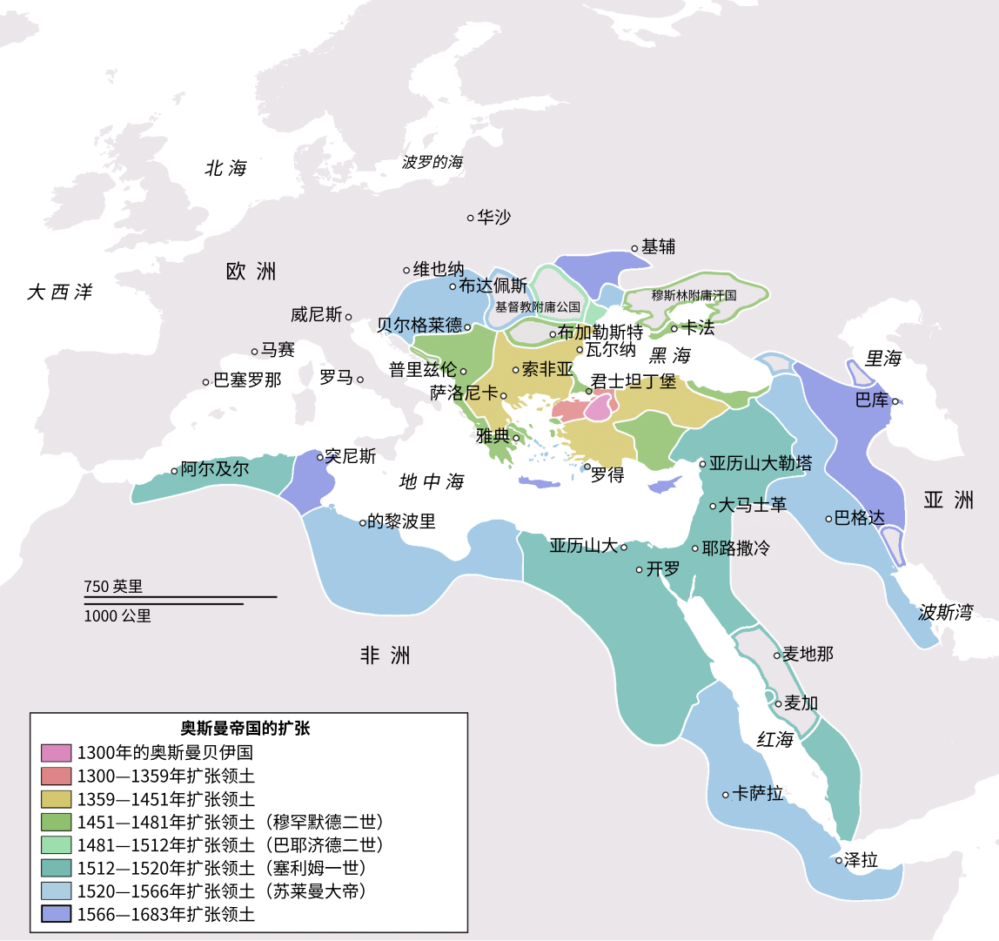
開啟大圖 ↗ 鄂圖曼帝國截至 1683 年的歷次擴張（原圖使用簡體中文）
AtilimGunesBaydin、Visnelma；中文翻譯 Buernia · 圖像來源 （CC0）
比較時留意什麼？ 第一張呈現歐洲各勢力的分布，第二張以不同色塊表示鄂圖曼在不同時段增加的領土；第二張不是 1683 年全歐洲政治版圖。兩圖的色彩與範圍不同，不能直接用相同顏色判斷同一國家，也不能只靠色塊推論居民的宗教或認同。
材料二：1521 年路德在沃姆斯帝國議會的聽證
1521 年 1 月，教宗良十世將路德逐出教會。同年 4 月 17、18 日，路德來到沃姆斯主教宮，在皇帝查理五世與帝國諸侯面前接受訊問。代表特里爾總主教的官員向他提出兩個問題：是否承認這些著作出自自己？是否願意撤回其中的主張？
路德在第一天請求時間思考，隔日提出答覆。面對撤回著作的要求，他把聖經與良知放在回答的中心。這段回應讓我們繼續追問：一個人如何說明自己的信念，又如何面對制度與權威的要求？
文本小站：他依據什麼拒絕撤回？
拉丁文短節錄（保留所據版本的拼字）：
captaque est conscientia in verbis Dei, revocare neque possum neque volo quidquam
中文譯意：「我的良知受上帝的話語約束；我不能、也不願撤回任何主張。」
路德在前文訴諸聖經的證言與明確的理據，因此這裡的「良知」仍與信仰緊密相連。我們可以沿著他的回答，思考文本、良知與宗教權威如何彼此牽制，以及這場爭論與中世紀神學之間的延續與變化。
版本依據：Bibliotheca Augustana 所錄 Melanchthon 的 Historia de vita et actis Lutheri （1546）附錄「Acta」；定位至末次簡答、印本葉碼 [D.r]。這是後來刊行並傳承的記述，並非錄音或路德親筆逐字稿。拉丁文已與此版本核對；不同記述與譯本有異文。「我站在這裡」在這份後刊文本中出現，沃姆斯市史頁則說明其為後加語句，因此不當作當日確定逐字發言。
來源：原語文本與版本 、沃姆斯市聽證背景 。
主視覺一：鏡子讓畫面多出另一個空間
揚・范・艾克 1434 年的《阿諾菲尼夫婦像》中，後牆的小凸面鏡映出了畫面之外的房間與來客。鏡子是一件日常物品，卻讓畫家重新處理觀看、空間與「誰在現場」的問題。
我們不把一面鏡子說成文藝復興或肖像畫的單一原因，而是藉它觀察：材料、技法、城市生活與人的自我形象如何一起改變。當這種畫面出現時，我們也正在接近中世紀與文藝復興互相重疊的地帶。
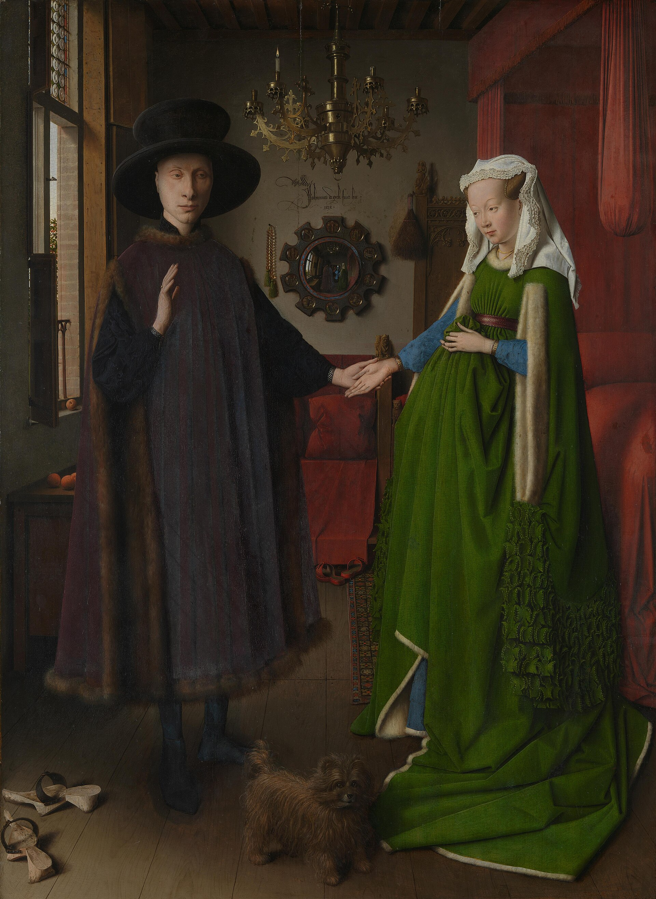
開啟大圖 ↗ 揚・范・艾克《阿諾菲尼夫婦像》，1434
Jan van Eyck, The Arnolfini Portrait , 1434 · 圖像來源 （公眾領域作品重製）
藝術鑑賞：把視線移向鏡框、文字與日常物件
藝術鑑賞常從四個方向著手：一是觀看與空間 ，追問凸面鏡如何把觀眾拉進房間；二是物質生活與身分 ，比較衣料、家具與水果所呈現的富裕生活；三是宗教與象徵 ，討論受難圖像、狗與儀式姿態可能帶來的意義；四是作品功能與觀看史 ，比較婚姻／訂婚見證、雙人肖像等解讀，以及後來的人怎樣改變作品名稱。Panofsky 的婚姻見證說曾有重大影響，Hall 提出訂婚解讀，Campbell 的館藏目錄則質疑這些敘事，傾向雙人肖像。我們可以比較每種說法如何使用鏡子、簽名與人物手勢，而不急著選出唯一答案。
先描述畫面，再提出解讀；下面的物件不必各自對應一個固定答案。
鏡框 ：十個小圓格描繪基督受難及其相關事件。室內用品怎樣容納宗教故事？牆上文字與簽名 ：Johannes de eyck fuit hic / .1434.，意為「揚・范・艾克曾在此，1434」。簽名為何寫成「在此」而不是只寫「作畫」？鏡中人物 ：男女的背影之外，門口另有兩人。館方提出其中一人可能是畫家的解讀；不能把身分或婚禮見證功能寫成定論。鞋履 ：左前方木製套鞋與後方紅鞋可供比較。男子仍穿鞋，不能因套鞋脫下就斷言這是赤足站在聖地的儀式。狗 ：先看牠的毛色、位置與朝向。牠可以是家養寵物；「忠誠」是常見象徵解讀，不能因此確定畫的是婚禮。窗景 ：左窗外有櫻桃樹，窗邊有橙子。窗把室內與城市生活之外的自然連起來；水果也可成為物質生活的觀察入口。布料與衣色 ：女子綠色長裙、男子深色外衣與毛皮、紅色床幔互相映襯。先比較光澤、摺痕與面積，再追問服裝、家具與富裕身分的關係。裙腹隆起不能單獨作為懷孕證據。
上述可見細節依倫敦國家美術館作品頁與館藏目錄核對。人物確切身分、畫作功能及物件寓意仍有討論；課程沿用《阿諾菲尼夫婦像》譯名，不因此認定這是婚禮紀錄。圖像沿用既有本機檔與來源，不另下載館方受限影像。
來源：作品頁 、館藏研究目錄 。
主視覺二：《十日談》的郊外說故事場景
薄伽丘筆下，十名年輕男女為躲避黑死病而離開佛羅倫斯，在郊外居所輪流說故事。笑話、愛情、機智與對教會人物的諷刺，都進入了這個說故事的共同體。
1916 年沃特豪斯的《十日談故事》是後世畫家對這個場景的想像，不是十四世紀的現場紀錄；它適合提供畫面感，再回到文本分辨故事的時代與後人觀看它的方式。
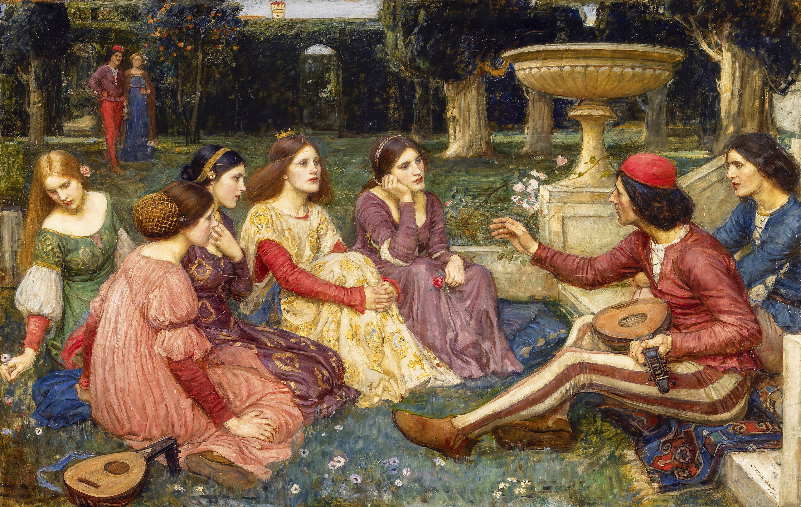
開啟大圖 ↗ 約翰・威廉・沃特豪斯《十日談故事》，1916
John William Waterhouse, A Tale from the Decameron , 1916 · 圖像來源 （公眾領域）
圖像詳註 ：John William Waterhouse，A Tale from the Decameron ，1916，油彩畫布，現藏 Lady Lever Art Gallery（National Museums Liverpool）。畫中花園、階梯、樹蔭與人物圍坐，構成一個離開城市後的敘事空間。我們可以沿著人物視線尋找說話者與聆聽者，再比較文字中的十人共同體；畫面不是瘟疫死亡的寫實紀錄，也不是薄伽丘時代的服裝與建築證據。文本框架中的十人是七名女子、三名男子；不要把畫中每一個身影直接對應到小說人物。這幅畫是後世藝術想像，尚不指定它重現哪一天、哪一則故事。
館藏來源：National Museums Liverpool 作品入口 。
延伸閱讀 繼續追問
文藝復興是重新發現古典世界，還是後來的人創造出來的時代名稱？
一面鏡子如何改變畫家安排空間、人物與觀看者的位置？
《十日談》為何把疾病、城市生活、笑聲與宗教批評放進同一部作品？
有了終點的概念後，再回到羅馬滅亡及更早的歐洲背景。
這部分從古代遷徙、族群、語系與文字使用模式入手，探索歐洲在進入中世紀之前的發展脈絡。同時追問：
羅馬曾為歐洲帶來哪些制度、觀念與精神特質？ 這些影響如何在帝國破裂的過程中崩解、延續或轉變？ 日耳曼族群如何從自身的傳統領域與精神文化，逐步銜接羅馬遺產及基督信仰？ 我們試著從這裡追問：既有世界的破裂與不同傳統的重新組合，各自如何參與中世紀的形成？
進入中世紀以前，先要看見羅馬曾經建立的是一個規模廣大、聯繫緊密的文明世界。羅馬承接希臘文明，也把思想與制度帶進城市治理、道路、水道、建築、法律和公共生活。這些成就讓我們理解：帝國崩解所改變的，不只是一張政治版圖。
羅馬人也重視榮譽、演說與辯論。即使帝國時期的政治已經改變，共和時代留下的治理理想與公民性格，仍然成為後人反覆回望的典範。
另一方面，歐洲各地的族群、語言與文字並沒有在某一年突然換成全新的樣貌。遷徙、混合與重新命名，是從古代一路延續到中世紀的漫長過程。
延伸閱讀與材料觀察
先將「羅馬滅亡」拆成幾個問題：失去的是統一的政治權力、跨區域的供應網絡，還是所有人的語言、法律與信仰？不同問題需要不同材料。政治地圖提供第一個入口，生活器物與文字記錄則能讓我們繼續追問。
圖 3–1 · 從帝國分區到多個王國
先看原來的廣域統治，再看政治中心如何增加。 左圖呈現西元395年前後羅馬帝國分為東、西兩個統治區域；右圖則呈現五世紀末西羅馬舊領土上出現的多個王國。把兩張圖放在一起，才能看出「帝國破裂」在空間上改變了什麼。
讀圖提醒： 政治色塊改變，不代表原有居民、語言、法律與信仰在同一天消失；也不能把每個色塊理解成只有單一族群。
從課堂問題繼續想
「中世紀初期的歐洲樣貌如何退化？」 舊課堂把經濟與人口列為觀察方向。試著再追問：這張地圖能回答人口變少了多少嗎？若不能，你還需要聚落、墓葬、城市面積或其他什麼資料？
問題來源：星汐班先修課堂紀錄〈中世紀初期的歐洲樣貌如何退化？〉；後續追問為新增。
延伸閱讀
聖奧古斯丁：柏拉圖如何成為理解信仰的工具？
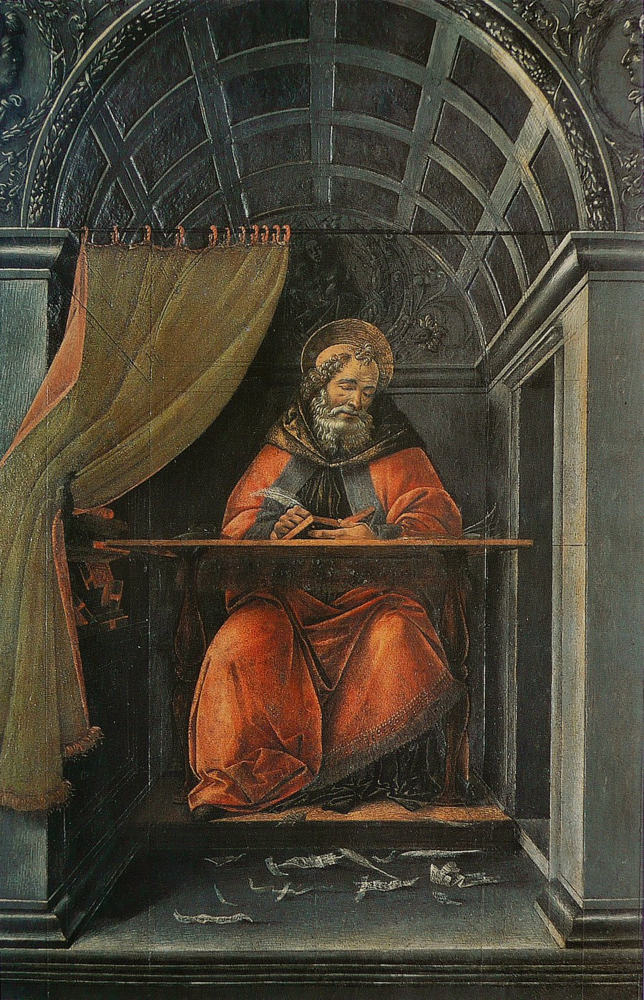
波提且利《書房裡的聖奧古斯丁》，約1490–1495年。這是後世藝術家的想像，不是本人肖像。 聖奧古斯丁 Augustine of Hippo
一位把柏拉圖哲學帶進基督教思想中的北非主教。
奧古斯丁出生在北非，曾到迦太基學習修辭，後來又前往羅馬與米蘭。他讀到柏拉圖一派的著作時，發現哲學可以幫助他思考看不見的上帝、人的靈魂、善惡，以及人為什麼要回到內心尋找真理。
他沒有把柏拉圖寫進《聖經》，而是把希臘哲學變成理解《聖經》的工具。他也不全盤接受柏拉圖，而是在兩者相同與不同的地方反覆思考。透過《懺悔錄》和《上帝之城》等作品，他為西方教會建立了一套更有結構的思想語言。
作品資料：烏菲茲美術館 ；圖檔來源（Wikimedia Commons，公有領域） 。思想背景參考：Stanford Encyclopedia of Philosophy 。
羅馬帝國消失後，什麼還留在人的生活裡？ 五世紀前後，不同群體以戰爭、協議、從軍或移居等方式進入羅馬帝國的舊領土。哥德人、法蘭克人等統治集團帶著自己的親族關係、軍事效忠和生活習慣，在陌生的城市與鄉村中建立新的王國和地方網絡。
改變確實很大：西歐一些地區的長距離貿易、城市公共設施、專業製造與行政書寫迅速縮小，許多普通人不再生活在原本的羅馬供應網絡裡。不過，新統治者面對的居民多半仍來自羅馬世界，因此也會借用或改造羅馬法律、城市、教會、拉丁語和地方菁英。新的王國不是把羅馬完整保留下來，也不是從零開始的「純日耳曼世界」，而是在崩解、誤解、沿用與重新組合中形成。
比對閱讀：Oxford Academic：Germanic successor states ；The Met：The Roman Empire ；Mainz University：After Rome 。
語言、族群與血緣是同一回事嗎？ 一個人說某種語言，不代表他的血緣、政治歸屬和自我認同一定完全相同。看到「法蘭克人」或「哥德人」時，可以先問：這個名稱指的是統治者、軍隊、居民，還是後來寫歷史的人所做的分類？
材料入口：原課程的遷徙、語系與文字分布圖。不能只憑一張地圖替所有居民決定身分。
帶著問題往下讀：政治邊界能代表整個歐洲嗎？ 第四章 →
04 第四章
歐洲的區域差異 具有時間與空間差異的中世紀歐洲
我們很容易把歐洲想成沒有內部差異的整體，因此要透過不同時期的地圖，重新建立區域與變化的觀念。
比較內容包括族群與語系的分布、日耳曼各王國的版圖、羅馬的統治範圍，以及不同時間下的政治與地理格局。
我們要進一步理解：歐洲的共同歸屬與整體認同，是在歷史過程中逐漸形成的。 與外在世界及「他者」的互動，也是這個過程的一部分。我們將蒙古帝國與鄂圖曼帝國的衝擊放進討論，作為探討歐洲整體意識形成的重要切入點。
理解歐洲中世紀，因此必須同時認識其區域差異、區域特性與認同形成的歷程。
國中課程常把數百年的歷史壓縮在同一幅畫面裡：莊園、封建制度、騎士、領主與農奴似乎同時遍布整個歐洲，接著發生十字軍和黑死病。這樣的整理方便記憶，卻容易讓人誤以為中世紀既單一又長期不變。
重新比較地圖後，要把「在哪裡」和「什麼時候」放回問題中。海岸、河谷、內陸、城市與邊境會形成不同生活圈；西元六世紀的羅馬、九世紀的法蘭克世界和十一世紀的東歐，也不會是同一種社會。
教會的成長同樣具有時間與空間。它一方面逐漸形成跨地區的組織與權力，另一方面也必須進入各地生活，與既有節慶、地方習俗和人們理解世界的方式相遇。
延伸閱讀與材料觀察
以下兩張圖都描繪歐洲及周邊，但時間相隔近兩百年。先固定看三個位置：西歐、伊比利半島、東歐與東南歐，再比較名稱與統治範圍。兩張圖的顏色沒有共同編碼，不要直接把相同顏色當作同一政權。
最簡單的比較方式 西歐：814年的法蘭克帝國，到約1000年時分成法蘭西與神聖羅馬帝國等不同政治空間。 東方：約1000年的圖上，波蘭、匈牙利與基輔羅斯等名稱變得清楚；東南方仍可看到拜占庭帝國。 伊比利半島：兩張圖都不是單一政權統治，提醒我們不要把整個歐洲想成同一種發展。 814 年 約 1000 年 上下對照
讀完兩張圖，只要先帶走一個概念： 中世紀歐洲的政治空間會隨時間改變，而且各區域的變化速度與方向不一樣。
延伸閱讀
三個人，三種讓信仰走進中世紀的方法
聖奧古斯丁 Augustine of Hippo
他讓信仰成為可以思考、辯論和書寫的思想世界。
當羅馬世界正在改變，奧古斯丁借用希臘哲學的語言，重新思考人的內心、善惡、歷史與上帝。
教宗格列高利一世 Pope Gregory I
他讓教會成為可以救濟、協調並向遠方行動的組織。
西羅馬帝國消失一百多年後，羅馬城仍面對戰爭、糧食與秩序問題。格列高利一世不只講道，也處理教會土地、救濟窮人並派遣傳教者。我們試著沿著他的行動追問：信念、救濟與持續做事的組織能力，如何一起形成教會的力量？
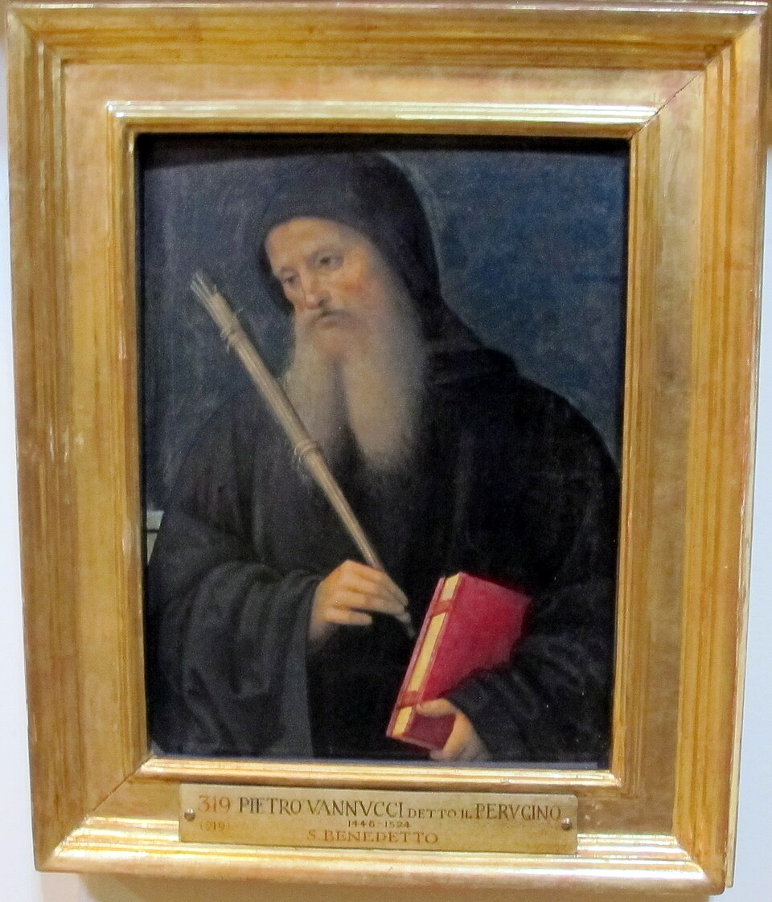
佩魯吉諾《聖本篤》，1495–1498年。這是後世宗教畫中的人物形象。 聖本篤 Benedict of Nursia
他替修道院的一天安排了共同生活的節奏。
我們在中世紀宗教繪畫裡常會遇見這位修士。他最重要的工作不是建立一支軍隊，而是規定修士如何祈禱、勞動、閱讀、接待旅人並共同生活。許多修道院因此成為地方上的信仰、教育與書寫中心。
材料入口：原課程〈基督世界〉 。譯名補充：天主教中文資料也常將 Augustine 譯為「奧思定／奧斯定」，Gregory 譯為「額我略」或「國瑞」。本頁採臺灣一般歷史閱讀中較容易辨識的譯名。聖本篤圖像：佩魯吉諾作品，Sailko 攝影，Wikimedia Commons （CC BY-SA 3.0）。
聖誕節與五朔節：新信仰如何走進地方生活？ 傳教者到達一個地方時，當地居民原本就有季節、農耕與冬夏交替的節慶。新的基督信仰並非把所有舊生活一次清除，而是在不同地區經歷並存、調整與重新解釋。
例如，聖誕節在各地會與原有的冬季習俗相遇；蓋爾文化的五朔節則延續了迎接夏季的火、花與聚會。這不表示某個基督教節日只是由單一古老節慶改名而來，而是提醒我們：信仰進入日常生活時，人們也會用熟悉的時間和儀式理解它。
同一片土地，可以畫出多少種歐洲？ 把政治版圖換成語言、宗教、修道院、朝聖路線或貿易地圖，邊界就可能完全不同。比較地圖以前，先確認它畫的是哪一種關係以及哪一個年代。
政治地圖能指出統治範圍，卻不能單獨證明每位居民如何認同自己。要理解共同性如何形成，還需要宗教文字、旅行記、外交文書與日常器物。
05 第五章
三股內在動力 日耳曼傳統、希臘羅馬遺產與基督信仰。
從前面的章節出發，我們試著追問：羅馬帝國崩解後，歐洲有哪些既有材料，哪些群體又帶來新的做法？接下來，我們用三股內在動力整理這個複雜世界：日耳曼傳統、希臘羅馬遺產與基督信仰。
這三股力量不是三個彼此隔離的盒子，也不能直接等同於三種固定民族性格。它們比較像三條觀察線索，讓我們追問：人們如何理解榮譽、誓言與血親？如何沿用法律、城市、文字與公共制度？又如何透過教會、修道院與信仰實踐，重新組織共同生活？
本章先分別辨認每股力量的材料與問題。制度與角色如何交疊，留到第六章再用具體關係檢驗。
因此，我們不是要替每一件事找到唯一來源，而是先認識三股力量各自帶來哪些材料，再觀察它們如何在同一片土地上相遇、選擇、修改與重新組合。
延伸閱讀與材料觀察
核心概念圖：三條並列的觀察線索
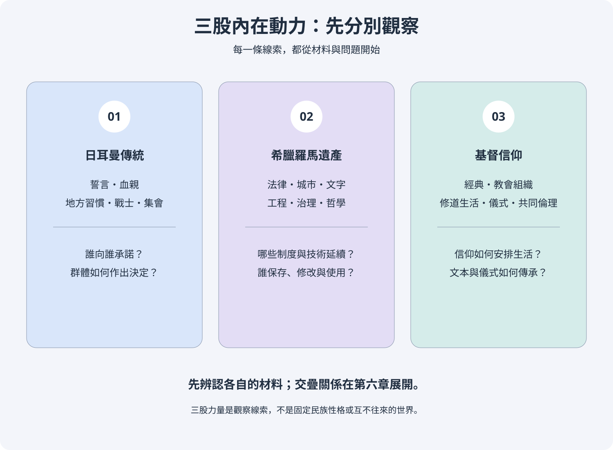
開啟大圖 ↗ 三股內在動力概念圖
本課程原創概念圖；可由文字與材料繼續追問。
日耳曼傳統 ：誓言、血親、地方習慣、戰士與集會。希臘羅馬遺產 ：法律、城市、文字、工程、治理與哲學。基督信仰 ：經典、教會組織、修道生活、儀式與共同倫理。
並列概念圖的文字是這一章的概念材料。每一項都只是觀察入口，不能直接推論成所有地區、所有人的共同特質；三者的交集留到第六章展開。
一、日耳曼傳統：群體如何承諾與決定？
「日耳曼」包含不同群體與地方傳統，不能當成一種固定性格。我們可以從誓言、親族責任、地方習慣、戰士群體與集會追問：承諾如何獲得信任？衝突如何處理？哪些人能參與決定？這些問題需要各地的法律記錄與敘事材料來回答。
二、希臘羅馬遺產：人們保存了什麼，又怎樣使用？
法律、文字、城市、道路與工程留下不同形式的材料；哲學也提供理解世界的語彙。我們先分辨物質建築、書面制度與思想傳統：建築仍在，不等於原有行政制度仍完整運作；一部文本被抄寫，也不等於讀者理解完全相同。
三、基督信仰：共同生活如何獲得意義？
經典閱讀、教會組織、修道生活、祈禱與儀式，使人們安排時間、形成群體並討論共同倫理。我們可以先問：誰講解經典？日常生活如何被節日、禮拜與修道規律組織？教會與修道院的功能，又如何隨地區與時期改變？
情境材料組：先分別進入三種世界
這組材料不替代概念圖中的文字，而是提供進入材料以前的畫面感。
日耳曼與北方傳統的想像：生命樹
我們試著從十九世紀的「世界樹」版畫追問神話、自然與群體記憶如何被後人視覺化。它不是早期日耳曼社會的直接紀錄，也不能代表所有日耳曼族群。
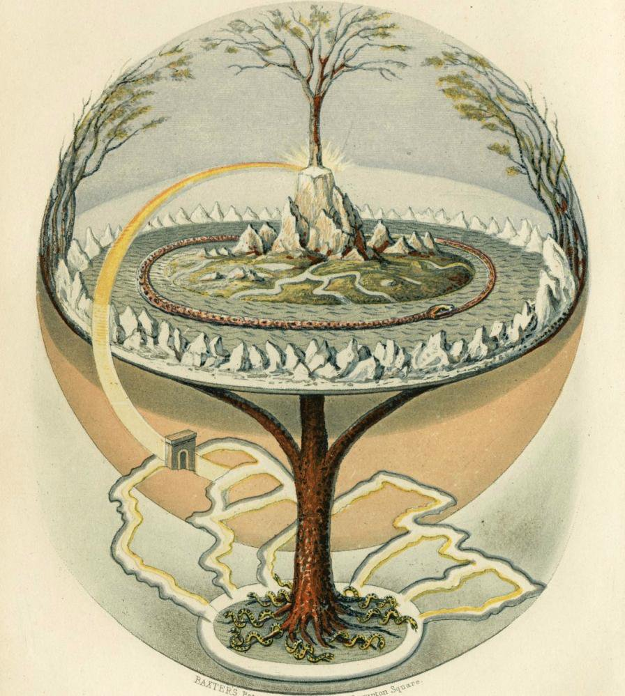
開啟大圖 ↗ 1847 年《散文埃達》英譯本中的世界樹圖
Oluf Bagge, Yggdrasil , 1847 · 圖像來源 （公眾領域）
羅馬遺產的空間感：城市與公共建築
觀察問題：完整建築如何安排公共活動？哪些法律、文字、工程與治理方式可以在空間中找到線索？
基督信仰的空間感：光線、祭壇與彩色玻璃
走進哥德式教堂，目光被引向祭壇，彩色玻璃把外面的日光轉成有顏色的宗教空間。這張較晚期教堂照片提供一種信仰空間的感受，不能倒推所有中世紀教堂都有相同形式。
開啟大圖 ↗ 巴黎聖禮拜堂內部
Joe deSousa, Apse of Sainte Chapelle, Paris , 2013 · 圖像來源 （CC0）
延伸閱讀 繼續追問
誓言、血親與集會在不同日耳曼社群中各有什麼作用？
羅馬城市衰退後，哪些治理與文字傳統仍被不同群體重新使用？
神判法真的只是迷信嗎？ 當書面證據有限、地方社群需要共同接受判決時，它在當時解決了什麼問題？
06 第六章
力量交疊與新秩序 三股傳統如何交融成中世紀的新秩序？
第五章先把日耳曼傳統、希臘羅馬遺產與基督信仰分開觀察；第六章則走進三個圓彼此交疊的位置。新的制度與角色不是把三種傳統各取一部分直接拼起來，而是人們在戰爭、土地、信仰、保護與治理的需要中，不斷重新解釋舊有做法。
我們可以問：一個重視誓言、集體決策與戰士榮譽的群體，遇到羅馬的成文法、政治階層與治理制度時，會形成什麼新的承諾與權力關係？一名以戰鬥為職責的人，遇到基督信仰的虔誠、戒律與美德時，又如何被塑造成「騎士」的理想形象？
同時，基督信仰也不是只存在於個人內心。教會沿著羅馬城市與行政網絡擴展，形成教宗、總主教、主教與地方教會的層級；修道院散布各地，成為祈禱、教育、抄寫、接待旅人與保存知識的節點。這些網絡並非在所有時期都同樣強大，卻逐漸讓教會成為能跨越地方政權、甚至與君王抗衡的力量。
延伸閱讀與材料觀察
三圓交疊海報：關係如何向外延伸？
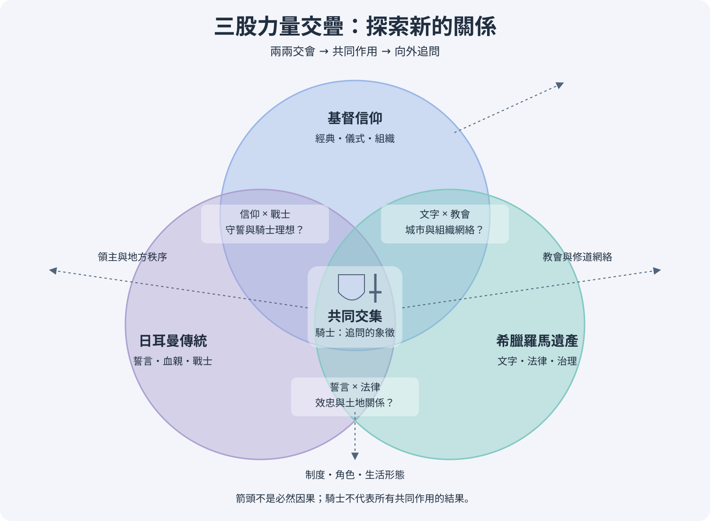
開啟大圖 ↗ 三股力量交疊與向外延伸的概念海報
本課程原創概念圖；可由文字與材料繼續追問。
先讀圓內的三種材料，再走向三組兩兩交集及中央共同交集，最後沿箭頭追問制度、角色與地方秩序。箭頭表達探索方向，不是必然因果，也不按面積表示各股力量的貢獻比例。
中央象徵的評估 ：採用自製的騎士盾與劍符號，作為追問誓言、法律／土地關係、信仰倫理的入口；它不是三種文明混合後的唯一產物。「騎士」本身也不能被直接視為希臘羅馬遺產的延續，須透過文字、治理與土地關係具體檢驗。修道院、教會與村落秩序不收束成騎士一個角色。
三組交疊關係
日耳曼傳統 × 希臘羅馬遺產
誓言、戰士群體與地方習慣，遇上羅馬的成文法、階層、行政語言與土地治理。這些交會幫助我們理解效忠、領主權力、土地關係及地方秩序如何逐漸形成；它們在不同地區並沒有單一、固定的「封建制度」版本。
日耳曼傳統 × 基督信仰
好戰與榮譽的傳統，逐漸被放進虔誠、守誓、美德、保護弱小與尊重婦女等基督教語言中，形成後來的騎士理想。這是一套文化規範與自我描述，不等於每一位騎士在現實中都依照理想行動。
希臘羅馬遺產 × 基督信仰
教會使用拉丁文字、城市節點、行省與層級組織，把信仰傳向更廣的地區。主教座堂、地方教會與修道院像一張網，既延續部分羅馬制度，也創造了新的宗教、教育與社會角色。
三者共同交集
當誓言與榮譽、文字與治理、信仰與組織同時作用，我們試著從這裡挖掘中世紀的新生活形態：領主與附庸、騎士理想、莊園關係、教會層級、修道院網絡，以及多種地方秩序。
延伸閱讀 繼續追問：教會與君王的關係 教會如何從地方組織變成跨越歐洲的權力網絡？
早期教會借用城市、文字與行政層級建立組織；到了十一世紀，教宗格列高利七世更主張教會有權規範神職任命與君王。1077 年的卡諾莎事件常被講成皇帝亨利四世在雪地中等待、請求教宗解除絕罰的故事。
這個故事能讓我們感受教宗權力的高點，卻不能證明教會在整個中世紀、所有地區都擁有「絕對權力」。更值得追問的是：教會憑藉哪些組織、儀式、文字與社會網絡，逐漸取得與君王談判甚至抗衡的能力？
07 第七章
四條外部衝擊 歐洲如何被外部力量打開、改變與重組？
如果只從歐洲內部解釋中世紀，很容易把歐洲寫成自己一步一步走向進步的主角，把其他地區寫成背景。這一章換一個位置：我們站在更大的歐亞世界，觀察歐洲如何被外部力量推動、打開與改變。
伊斯蘭世界的城市、學術、翻譯與商業網絡；蒙古帝國重新連接的草原與陸路；黑死病沿著人群、港口與道路擴散；東羅馬帝國衰亡與鄂圖曼崛起所帶來的權力及知識流動，都使歐洲持續吸收外來的知識、技術、作物、商品與觀看世界的方法。
「外部衝擊」不只等於入侵或破壞。同一條網絡可能帶來貿易與疾病，戰爭與翻譯，失去家園與新的學習。後來被稱為文藝復興或進步的變化，並不是歐洲封閉發展的必然結果，而是外部交流、內部傳統與地方社會長期重新組合的結果。
這也為我們留下另一個問題：今天我們面對來自歐洲的制度、價值與社會形式時，不必只問「怎麼追上」。我們也可以問：這些制度原本回應了什麼歐洲社會紋理？放進我們自己的歷史、文化與生活需求後，需要怎樣重新理解與改造？
延伸閱讀與材料觀察
四股力量進入歐洲：概念海報
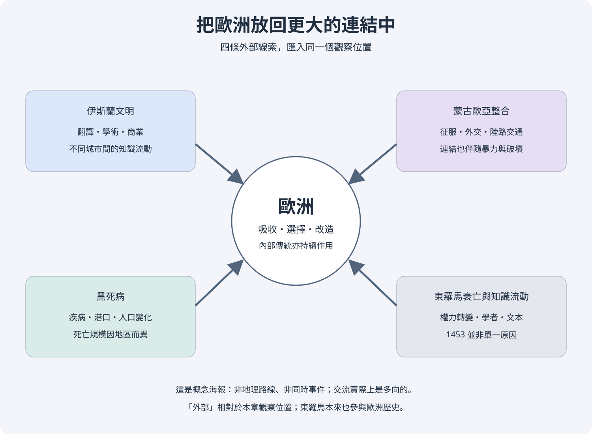
開啟大圖 ↗ 四股外部力量進入歐洲的原創概念海報
本課程原創概念圖；可由文字與材料繼續追問。
四條箭頭匯入歐洲這個觀察位置，分別標示知識與商業、征服與交通、疾病與人口、權力與文本。這是課程概念海報，不是地理地圖或四件同時發生的事件；交流實際上具有多向流動，歐洲也不是所有網絡的中心。東羅馬與歐洲本有內在連結，所謂「外部」只是本章從西歐觀察的相對位置。
四條線索與圖像材料
一、伊斯蘭文明：歐洲之外的高度文明世界
以 1236–1237 年由瓦西提在巴格達抄寫、繪製的《哈里里的瑪卡梅》圖像為入口。我們試著從書籍、圖書館、學者、翻譯、天文、醫學與跨城市交通追問：伊斯蘭世界如何生產知識？如果只把它當作古希臘知識的轉交通道，又會漏掉哪些創造與交流？
知識殿堂的象徵 ：我們可以用這幅圖書館場景，想像伊斯蘭黃金時期的書籍、學者與知識交流。它呼應「智慧宮」帶給我們的知識殿堂意象；圖說仍依館藏資料標示巴斯拉圖書館，不把它指定為某座智慧宮建築的實景。
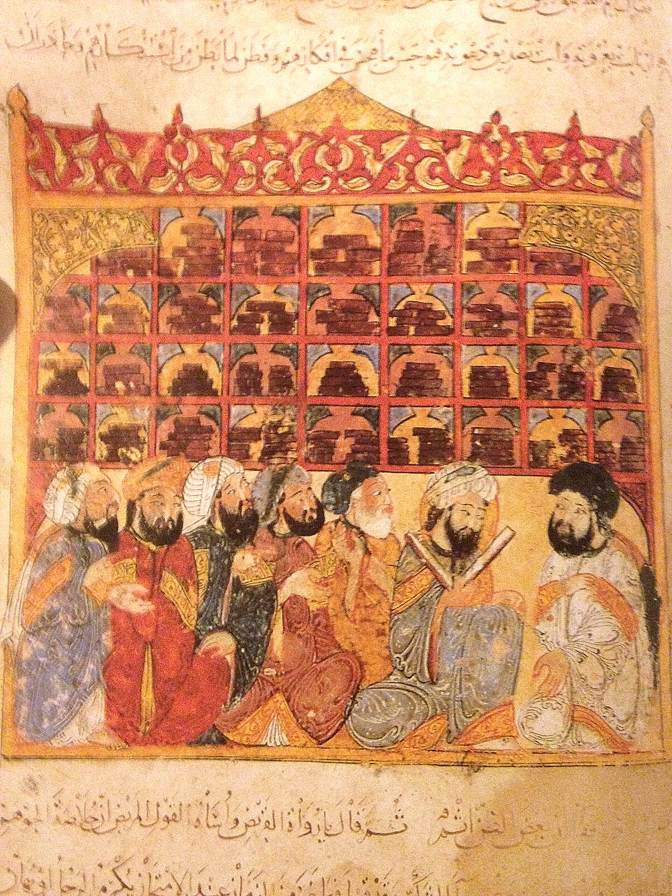
開啟大圖 ↗ 瓦西提《哈里里的瑪卡梅》巴斯拉圖書館場景，十三世紀
Yahya ibn Mahmud al-Wasiti, Maqāmāt al-Harīrī , 1236–1237 · 圖像來源 （公眾領域）
十字軍的閱讀也加入阿拉伯與穆斯林的位置。十三世紀英格蘭修士馬修・帕里斯的手稿描繪薩拉丁在哈丁戰役後取得十字軍的聖物；這幅圖距事件較近，卻仍是西歐基督徒的觀看方式，不能當成薩拉丁本人的肖像。
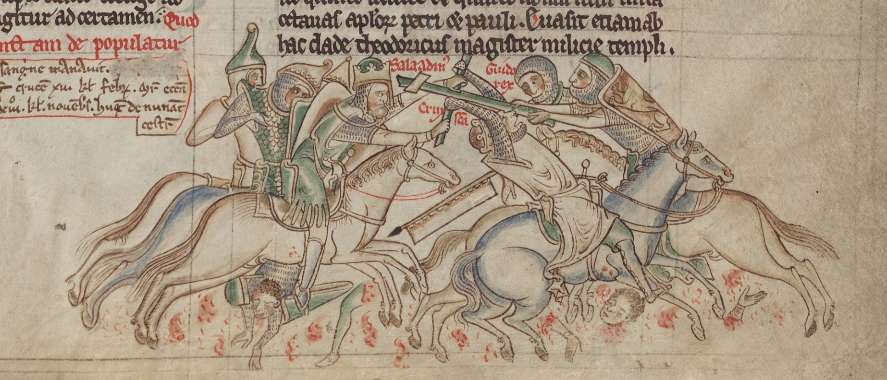
開啟大圖 ↗ 十三世紀手稿中的薩拉丁與哈丁戰役
Matthew Paris, Chronica maiora , 13 世紀 · 圖像來源 （公眾領域）
延伸閱讀｜錯譯的「十字軍東征」，被標籤化的歷史
同一場戰爭，站在不同的人身旁，會看見不同的故事。我們熟悉的「十字軍東征」，換到當地人的眼中，又會是什麼模樣？跟著花亦芬的文章，試著換個位置看這段歷史。
閱讀全文：花亦芬〈錯譯的「十字軍東征」（crusades），被標籤化的歷史〉｜歷史學柑仔店 ↗
二、蒙古歐亞整合：兩張地圖對照閱讀
以蒙古帝國 1206–1294 年擴張圖，觀察勢力範圍如何橫跨歐亞大陸。先從版圖與地理位置辨認尺度，再追問征服、外交、商業、技術與知識傳遞如何同時發生。
延伸閱讀｜1206–1294 年，在中國歷史的哪一段？
1206 年，成吉思汗在草原上建立蒙古帝國。這時，中國正是南宋。幾十年後，他的孫子忽必烈建立元朝；到了 1279 年，南宋結束。把兩條時間軸放在一起，原來熟悉的宋、元，也在這個歐亞故事裡！
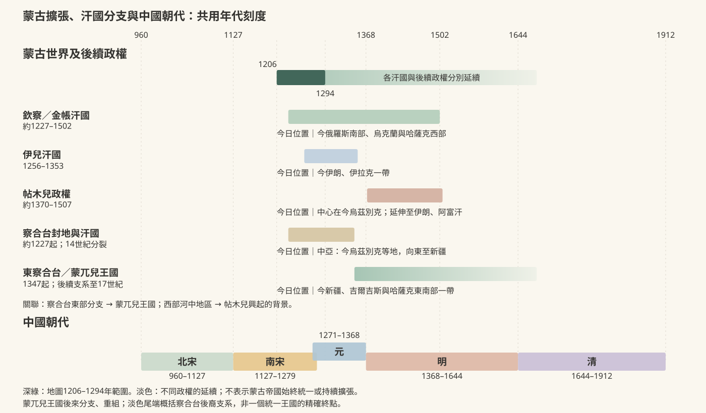
開啟大圖 ↗ 蒙古擴張、汗國分支與中國朝代的共用刻度時間軸
本課程原創概念圖；可由文字與材料繼續追問。
故事還沒結束。後來，一位出身中亞帖木兒家族的王子巴布爾，來到印度，在 1526 年建立蒙兀兒王朝。幾代之後，這個王朝留下了著名的泰姬瑪哈陵。從草原到印度，人物與文化的旅程，比地圖上的那一段年代還要長。
來源：大都會博物館：蒙古汗國 、印度蒙兀兒王朝 、摩根圖書館：沙賈漢與泰姬瑪哈陵 。
兩張圖怎麼一起讀？ 擴張示意圖幫我們辨認不同階段的範圍；英文大地圖則讓我們把汗國、城市、地形與征服路線放在一起觀察。先找出兩圖共同出現的區域，再追問：山脈、草原與交通路線如何影響征服及交流？英文圖的大圖以 1294 年為主要版圖背景，並附不同時期的小圖與後續汗國敘述；不要把所有文字、箭頭與色塊視為同一年的情況。
三、黑死病：網絡如何同時傳遞生命與死亡
時間色塊地圖把不同時段的傳播線索放回地理空間。我們可以先依圖例辨認年份，再沿港口與交通路線觀察區域變化。我們不是只看死亡數字，而是藉疾病反推港口、道路、商業與人口移動原本如何連接歐亞與地中海。
Advance of the Black Death｜黑死病的擴散進程 開啟原課程地圖 ↗ Advance of the Black Death｜黑死病的擴散進程
原課程黑死病時間圖，圖面標示 K. Franklin／Science；原課程來源 。色塊呈現傳播時間線索，不代表各區死亡率相同。
圖中 Caffa（卡法，亦拼作 Kaffa） 位於克里米亞半島的黑海沿岸，今稱 Feodosia（費奧多西亞） 。先在圖上找到它，再沿黑海、君士坦丁堡與地中海港口追蹤傳播線索。
延伸閱讀｜卡法之圍：一座港口如何連上瘟疫的旅程？
黑海邊的卡法，曾是一座熱鬧的港口。商人帶來貨物，船隻載著旅人離開；誰也沒想到，疾病也可能跟著上船。
1346 年前後，金帳汗國的軍隊圍攻卡法，軍中卻出現瘟疫。有一段著名記述說，圍城軍把染疫死者的屍體投進城裡。這件事是否真的發生，今天仍有爭論。
後來，瘟疫沿著黑海與地中海的航線傳播。卡法不是疫情最早出現的地方，卻讓我們看見：讓港口繁榮的船隻，也可能把危險帶到遠方。
城牆能擋住軍隊，港口又該如何擋住看不見的疾病？
來源：Mark Wheelis〈1346 年卡法之圍的生物戰〉（2002） 、德・穆西記述的批判性研究（2022） 、《Nature》中亞起源研究（2022） 。
人口小表：如果原本有 100 人，後來留下多少？
黑死病不是只有「死了很多人」這句話。我們先用簡單比例理解十四世紀中葉那幾年的衝擊，再把地區差異放回來。
觀察範圍
疫情前的大概規模
疫情後的大概規模
怎麼讀這個數字？
歐洲整體：比例示意
每 100 人
約留下 40–70 人
以約三至六成人口死亡的粗略範圍作入門；不是每個地方都如此。
歐洲整體：換算示意
約 8,000 萬人（不含俄羅斯的粗略基數）
約 3,000–5,500 萬人
按 UCD 研究稿整理的約 2,500–5,000 萬死亡估計相減；不是兩次人口普查。
英格蘭：約 1348–1350 年的衝擊
約 500 萬人
約 250 萬人
劍橋研究以約減半概括；保留整數尺度，不精算到個位人口。
倫敦：1348 年末開始的疫情
每 100 人
約留下 50 人
倫敦的研究概括可供比較，不當成全歐城市共同死亡率。
我們怎麼使用這張表？ 把原有的一群人想成 100 人，接著追問：田地由誰耕種？工資與土地關係可能怎樣改變？各地實際衝擊不同，研究也有更高的死亡估計；表格只幫我們掌握尺度，不代表爭論已經結束。第一波疫情在歐洲各地到達時間不同，常以 1347–1352 年概括；後來數十年的反覆疫情不能全部加進同一個比例。
花粉與土地使用研究提醒我們：有些地區農業大幅收縮，有些地區變化較小。這些間接線索可以拿來與文字記錄對照，但不能直接換算成每個地區的死亡率。
來源：UCD 經濟研究稿的人口基數與估計討論 、劍橋研究的英格蘭人口概括 、倫敦歷史研究講座說明 、Max Planck 的區域差異研究 。
四、東羅馬衰亡、知識流動與古代藝術的再發現
1453 年不是文藝復興的單一原因，但東地中海權力轉變、學者與文本移動，以及義大利城市長期累積的古典研究，共同改變了歐洲閱讀古代世界的方式。
《勞孔與他的兒子們》提供一個很有畫面的入口。雕像描繪特洛伊祭司勞孔與兩個兒子被海蛇纏繞，1506 年在羅馬出土時缺少右臂。米開朗基羅主張手臂應向後彎；當時修復卻裝上向外伸展的手臂。1906 年找回的原臂在二十世紀中期重新裝回，彎曲姿勢更接近米開朗基羅的判斷。
我們試著從這個故事挖掘：除了「喜歡古希臘羅馬」，發掘、比較、推測、修復與反覆修正如何參與古代藝術的再發現？藝術鑑賞又如何成為歷史研究的入口？
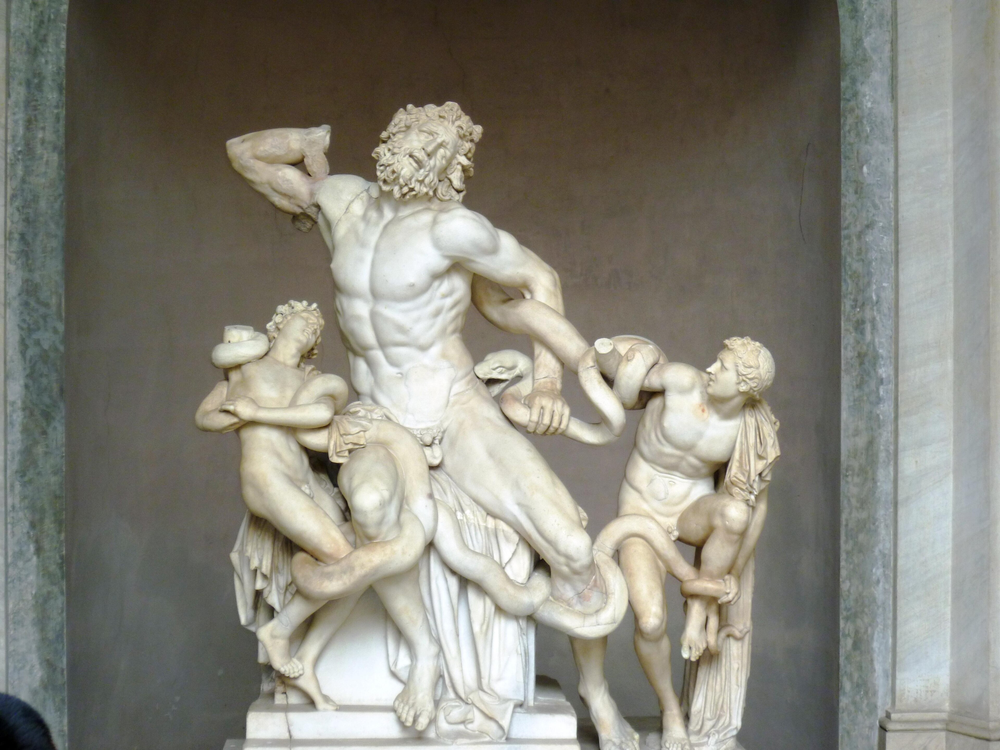
開啟大圖 ↗ 《勞孔與他的兒子們》雕像群
Radosław Botev, Laocoon group , 2014 · 圖像來源 （CC BY 3.0 PL）；攝影：Radosław Botev，Nomos Foundation，CC BY 3.0 PL 。
延伸閱讀 繼續追問
「十字軍東征」這個名稱，會不會只呈現其中一方的觀看位置？
蒙古帝國應只被理解為征服者，還是也重組了歐亞大陸的連結？
黑死病的傳播，能告訴我們哪些原本看不見的交通網絡？
當我們接納來自歐洲的制度與價值時，如何保有自己的歷史位置與社會需求？
08 第八章
為什麼是 Middle Age？ 誰替中世紀命名？
當我們已經理解中世紀的多層次發展後，再回到命名本身：為什麼稱為 Middle——「在中間」？
我們先辨識「中間」的兩端：一端是被回望與嚮往的希臘羅馬古典文明，另一端則是文藝復興逐漸形成、延伸至宗教改革的時代。
這讓我們理解，「中世紀」是一種後來者回看歷史所建立的分期，包含命名者的觀看位置與價值判斷。我們也可以看見評價的變化：從帶有黑暗或灰暗色彩的理解，轉向認識中世紀自身的發展與轉化力量。
同時留下「羅馬滅亡是轉型，還是崩解？」的討論，以「轉折的過程」作為理解重點。
學習歷史知識時，也要反過來追問知識是怎麼被組織出來的。「中世紀」並不是當時所有人共同決定的時代名稱，而是後來的人站在自己的位置上，選擇一段過去、替它畫出起點和終點。
歷史分期沒有一位人物可以獨自決定的標準答案。不同時代的人提出不同描述，後來的研究者再用更多材料修正它。我們今天沿用「中世紀」，也可以同時看見這個名稱背後的視角與限制。
延伸閱讀與材料觀察
時間向後推進 →
被回望的過去 希臘羅馬
兩端之間 Middle Ages
後來者的位置 文藝復興
← 後來的人回望古典，組織自己理解的歷史
圖 8–1 · 一個名稱中的觀看位置
「中間」需要兩端，也需要一位回望的人。
看見什麼 三個區段按前後排列，下方箭頭則表示後來者回望過去的方向。
觀察線索 先找命名者站在哪裡，再問：他選擇了哪一段過去作為參照？
連回正文 分期可以幫助理解歷史，同時也會凸顯某些變化、淡化其他延續。
推論限度 本圖是教學概念示意，不按時間長度比例繪製，也不表示名稱在某一天由某一個人一次定型。 依本課程第八項論述製作。分期背景參考：The Met, Medieval Art: A Resource for Educators 。
同一段轉折，為什麼可以有不同判斷？ 舊教材〈中世紀初期歐洲的全面退化〉使用人口、陶器、沉船與冰芯等材料，著重物質生活的變化。閱讀時，先辨認每種材料實際測量或保存了什麼，再檢查它是否足以支持作者的結論。
四個統計圖組成的圖表，呈現西歐人口趨勢、羅馬城人口、格陵蘭冰芯鉛污染，以及不同地區人口恢復時間。 開啟原課程地圖 ↗ 圖 8–2 · 物質生活退化的四組指標
四張圖放在一起，先看見「下降」不是只有一種證據。 左上與右上比較人口變化，左下用冰芯鉛污染作為採礦、冶煉與貨幣活動的間接指標，右下比較各地恢復到羅馬時期人口水準所需的時間。它們共同指向西歐在羅馬帝國瓦解後的長期低谷，也提醒我們：每一組數字都有自己的資料範圍與估算方法。
圖表取自原課程〈中世紀初期歐洲的全面退化：人口、經濟與文明的崩潰〉 末頁「多維度量化指標」。圖中的量化數值應回到原頁參考文獻逐項核對；本頁先用於建立材料比較的整體印象。
延伸討論
物質生活受損，與文化出現新形式，是否可能並存？ 試用這個句型回答：「在＿＿地區、＿＿時期，從＿＿材料看，我認為＿＿發生改變；但這還不能證明＿＿。」
示範一： 在五至七世紀的西歐，從陶器品質與分布範圍縮小來看，我認為專業製造和長距離交換受到了明顯破壞；但這還不能證明每個地區、每一種生活都以相同速度退化。
示範二： 在六世紀的東羅馬地區，從大型教堂、鑲嵌畫和法律編纂來看，我認為新的宗教藝術與政治文化仍在發展；但這還不能證明普通人的人口、糧食與貿易沒有受到衝擊。
展開思考提示 先限定時間、區域與觀察面向，再提出判斷。東羅馬仍自認為羅馬人的歷史，也能幫助我們檢查：以西歐為中心的敘述，是否涵蓋了整個地中海世界？
補充閱讀：The Met：Byzantium 。
延伸閱讀
寫十四行詩的佩脫拉克，為什麼也改變了我們看歷史的方式？
佩脫拉克 Francesco Petrarca
就是那位為蘿拉寫十四行詩、被稱為「人文主義之父」的詩人。
佩脫拉克喜愛古羅馬作家。他尋找古代手稿、閱讀西塞羅，也站在羅馬遺跡前想像失去的古典世界。當他把古代看成明亮的典範，古代之後的幾個世紀便容易被他看成一段衰落與黯淡的時間。
他沒有直接創造今天完整的「古代—中世紀—近代」課本架構，卻提出了一種影響深遠的觀看方式：把古典世界當作應當復興的過去，並在自己與古代之間看見一段距離。這也提醒我們，歷史名稱常常先從一種感受與評價開始。
人物定位參考：教育部教育百科：佩脫拉克 ；分期研究入口：紐約大學古代世界研究所 。
一個名稱，如何慢慢變成課本裡的三段歷史？ 佩脫拉克之後，人文學者持續用「中間的時代」描述古典世界與自己之間的年代。喬凡尼・安德烈亞・布西 Giovanni Andrea Bussi 在十五世紀留下了「中間時期」一類的拉丁文用語。
到了十七世紀，克里斯多福・策拉里烏斯 Christoph Cellarius 在歷史著作中清楚安排古代、中世紀與近代三部分，這套分法才逐漸成為後來課本熟悉的架構。名稱並不是某一天突然誕生，而是經過幾百年才慢慢固定。
補充來源：NYU ISAW：Defining the Ancient in Early Modern Europe 。
如果名字是後人取的，歷史還有唯一正確答案嗎？ 沒有唯一命名方式，不表示歷史可以任意想像。每一種說法仍然要接受材料、年代與其他解釋的檢驗。
可以試著把「黑暗」改成更具體的問題：是哪個地區、哪一段時間、哪一種生活變得困難？同一時期是否也出現新的藝術、信仰或組織？當問題變得清楚，我們才能看見崩解與轉型可能同時存在。
09 第九章
帶著歐洲的問題，走進中國中古 看見區域差異，再追問它們如何連結。
換一個地方，帶著問題重新開始 走過前面的課程，我們開始能把「歐洲中世紀」看得更立體：不同地方有不同的生活，不同傳統會彼此交會，遠方的交流與衝擊也會改變原來的世界。
現在，我們把目光轉向中國中古。先前使用的觀察方式，可以怎麼幫助我們理解這段歷史？我們先帶著一個問題出發：在古代早期帝國之後，人們如何重新安排生活、建立秩序，又把不同地區連接起來？
比較的目的，是讓問題更清楚。我們可以留意兩地的相似之處，也要看看：換了時間與地方，哪些原來的解釋需要改變？
先打開地圖，看看人們住在哪裡 在談朝代之前，先想像自己站在地圖前。沿著河流找平原，越過山脈看盆地，再找找城市與道路可能出現在哪裡。
住在不同地方的人，怎麼種田、怎麼往來，又怎麼把需要的東西送到遠方？一座山可能增加通行的困難，一條河也可能成為往來的路線。我們先辨認這些生活條件，再追問人們如何回應它們。
所以，讀這張地圖時，我們先不急著背完地名。試著挑兩個地方，說出它們哪裡不同，以及這種差異可能帶來什麼問題。
地區不同，怎麼被連在一起？ 課堂上，有同學提出了一個值得繼續想的問題：歐洲有許多不同的政治中心，那麼，中國歷史中不同地區的政治力量，又是怎麼分開、連結和重新整合的？
我們把問題縮小一點：選定一段時間，看哪些地方由同一個中心治理，哪些地方有自己的政治力量，再看看它們之間有什麼往來。
有人可能先想到地形，有人想到資源交換，也有人想到官員與治理制度。這些想法都可以作為起點。接下來，就用地圖、文字與具體事件，看看哪些線索支持它，哪些線索讓我們需要修正原來的猜想。
中國中古的閱讀，就從這裡開始：看見區域差異，再追問人們如何在差異之中，建立彼此的關係。
材料觀察與延伸閱讀
先看生活的地方 山脈 · 河流 · 平原 哪些地方容易往來？
再看人們怎麼往來 耕作 · 道路 · 交換 · 治理 人們如何運送物資？
圖 9–1 · 理解區域的兩條線索
環境提出條件，人們想辦法回應。 把兩條線索放在一起觀察：地形不是答案的全部，道路、交換與治理也值得追問。
依原課程的自然與人文要素提問整理，為本課程教學概念示意，非歷史地圖。
先看整個空間，再走近一個區域 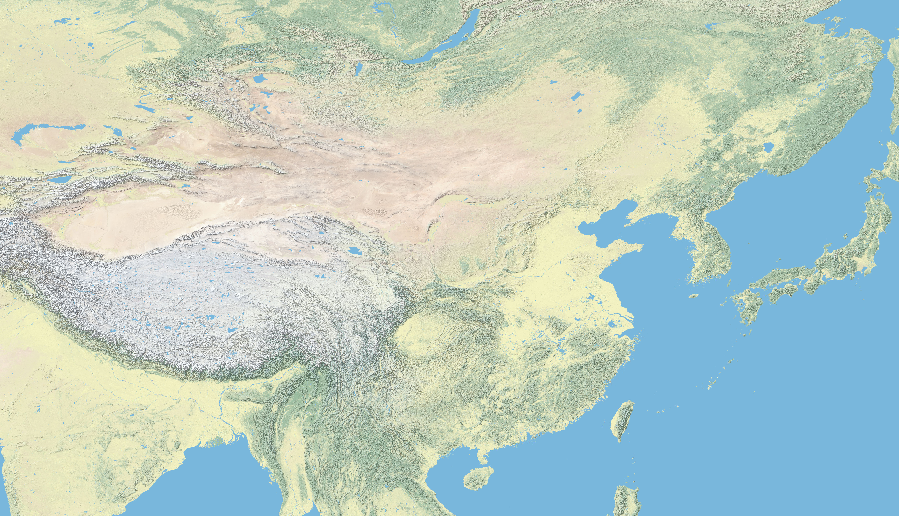
圖 9–2 · 地形全景
把高地、盆地與平原放在同一張圖裡看。 先找到青藏高原，再往東看山地與平原。點圖可開啟高解析度版本，觀察山脈之間的低地與河流。
Tom Patterson／美國國家公園管理局，Natural Earth；Wikimedia Commons來源與公有領域說明 。這是地形底圖，不表示中古政權邊界，也不是地形變遷圖。
圖 9–3 · 區域放大觀察
盆地不是孤立的一塊平地。 看看四川盆地四周的山地，再沿河谷往東找出路：住在盆地裡的人，可以從哪裡和外面往來？
同一地形底圖的局部放大；可回到上圖對照位置。
山地 盆地 山地 河谷 平原 圖 9–4 · 把平面地圖想成立體空間
山地圍出盆地，河谷留下往來的通道。 如果你要把糧食送到另一邊，會翻山，還是沿谷地走？再回到地形圖，找找相似的空間。
本課程原創概念示意，非特定地點的測繪；高度與距離不按比例。
延伸閱讀 同學的猜想，可以成為下一個問題 課堂上，有同學從地形想起，有同學想到不同地方需要交換資源，也有人注意到官員如何管理地方。
這幾個想法不必急著選出贏家。我們可以讓它們各自帶路：想到地形，就看道路怎麼走；想到交換，就找物資怎麼流動；想到治理，就追問誰派人、誰負責。
找到新的線索後，再回來看看原來的猜想。能把問題一步一步問清楚，就是這段閱讀要練習的事情。
依10/2課堂語音轉文字的匿名發言與教師追問歸納改寫。
10 第十章 · 10/6 課程整理
為解構觀看中國中世紀歷史的方式所做的準備 從區域差異、人口與權力，重新觀看中國歷史。
01 · 調整觀看方式
從朝代順序，轉向條件與關係 王朝興衰，是多種條件交互作用的歷史過程。
將分析歐洲中世紀的方式帶入中國史，可以觀察外來力量、內部動力，以及舊秩序分解後重新組合的過程。比較時須辨識兩者的差異，並追問各地、各時期如何形成不同的歷史面貌。
01 鬆動敘事 帝王功過與朝代更替之外，還有哪些長期累積的條件？
02 拆解整體 不同地區的環境、族群與生活方式，如何塑造王朝特色？
03 追問延續 政權反覆變動時，哪些文字、制度與價值仍維持連結？
02 · 生存條件與政治變化
把人口曲線，當作追問的起點 人口長期增加，可以作為觀察生產與資源利用能力的線索；人口大幅下降，則可能顯示社會面臨危機。氣候變冷、洪水、河流改道、旱災、蝗災與瘟疫，都可能破壞生產、迫使人口遷徙，進而削弱政權。
中國人口規模折線圖，橫軸為年代及朝代，縱軸為以萬人計的人口數，採對數刻度。 開啟原課程地圖 ↗ 圖 10–1 · 中國人口規模
曲線的轉折，提示我們尋找背後的條件。
看見什麼 圖中人口整體長期上升，中間出現多次下降與回升。
觀察線索 找出明顯轉折，再對照年代。縱軸採對數刻度，垂直距離不能直接當成人口差額。
連回課程 人口下降可能反映危機已在累積，不能只把它當作改朝換代之後的結果。
推論限度 曲線不能單獨證明因果；人口估計與登記範圍也可能不同。圖上落差不能直接視為戰爭死亡人數。 素材：使用者提供的課堂附圖 Ek7F0AJ.jpg；原始製圖與統計來源未標明。課堂亦指出太平天國相關人口估計存在爭議。
環境與災害壓力 → 生產受損、人口移動 → 治理壓力與政治變化
此示意為課堂論述整理，表示可能的影響路徑，各個事件仍須個別材料支持。
從生存條件理解北方族群南移，也能補充政治與軍事敘事：遷徙可能與資源壓力有關，交流、競爭和戰爭則是不同條件下的互動方式。
03 · 清代案例
危機如何改變掌握權力的人？ 課堂以清朝治理龐大人口的能力為起點，再透過太平天國戰亂，觀察既有軍事體系面臨的壓力。曾國藩、李鴻章等人組織的地方軍事力量，以及西方武器與訓練方式的引入，提高了地方官員和軍事集團的影響力。
這些政治、軍事與財政資源，並未隨清朝結束而立即消失。袁世凱與民國初年的軍事勢力提醒我們：制度和國號的改變，與實際權力的轉移，可能具有不同的節奏。此處以近代案例練習觀察「舊力量如何進入新秩序」，為後續中國中世紀的比較做準備。
04 · 區域多樣性
語言色塊，拆解單一的中國印象 不同地區長期形成不同語言與口音，遷徙又將它們帶往其他地方。地方差異不只存在於政治版圖，也存在於日常生活與文化之中。王朝從哪個區域出發、吸收哪些族群，都會影響它的特色。
中國漢語族語言分布圖，以多種色塊標示官話、吳語、閩語、粵語、客家語等分布。 開啟原課程地圖 ↗ 圖 10–2 · 漢語族語言分布
同一個地理範圍，包含多樣的語言世界。
看見什麼 多種語言分布並列，南方不少地區的色塊較細碎。
觀察線索 從臺灣對照福建，再往北、往西觀察色塊；注意同一語言內仍可能有不同口音。
連回課程 語言分布提供辨識區域差異的入口，也讓我們追問遷徙與交流的影響。
推論限度 這是現代分布圖，不能直接當作中世紀的語言地圖；色塊也不等於族群、血緣或政治邊界。本圖未完整呈現所有語言。 素材：使用者提供的課堂附圖 ukjzxSC.jpg。圖署名「橫山島主」，日期 2016.07.18，列出《中國語言地圖集》等參考來源；本頁未另行核驗製圖分類。
05 · 跨區域連結
差異之間，什麼維持了連續性？ 各地讀書人即使用不同語言誦讀經典，仍可能學習相同文本、參與同一套科舉制度。官話提供跨區域溝通的工具，儒家經典與選官制度則持續影響社會對知識、成功和政治秩序的理解。
漢字書寫及其承載的經典傳統，是課堂提出的另一項整合力量。不同族群建立王朝後，仍須面對既有的文字、價值與治理資源，並在其中調整統治方式。課堂將這種作用與歐洲基督宗教作功能上的類比，藉此追問思想中心如何跨越政權更替。
近代國語、注音符號與普通話的討論，進一步呈現語言整合如何成為國家政策。標準語言經過選定、規範與教育推廣，與各地口語在生活中逐漸形成的歷程具有不同的推動方式。
06 · 四個區域為基礎的分析框架
換一個空間與時間框架，會看見什麼？ 先看四張地圖。它們是四個觀察入口：同一段歷史，可以從中原的治理、草原的移動、江南的發展，或海上的往來重新理解。
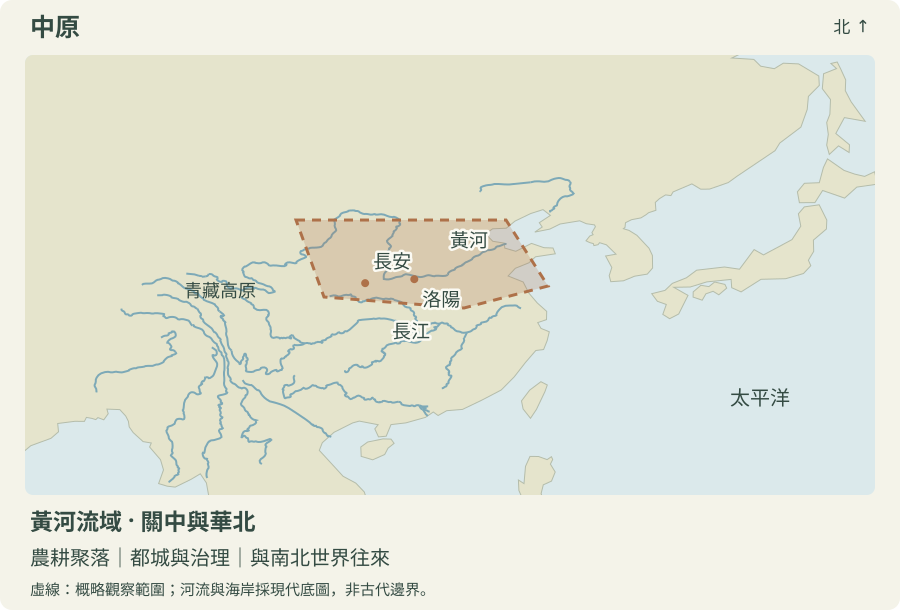
開啟地圖 ↗ 圖 10–3 · 中原
黃河流域的農耕世界，連接關中盆地與華北平原。 都城、聚落與治理制度在這裡發展，也不斷與草原及南方互動。看看長安與洛陽的位置：政治中心為何會改變？
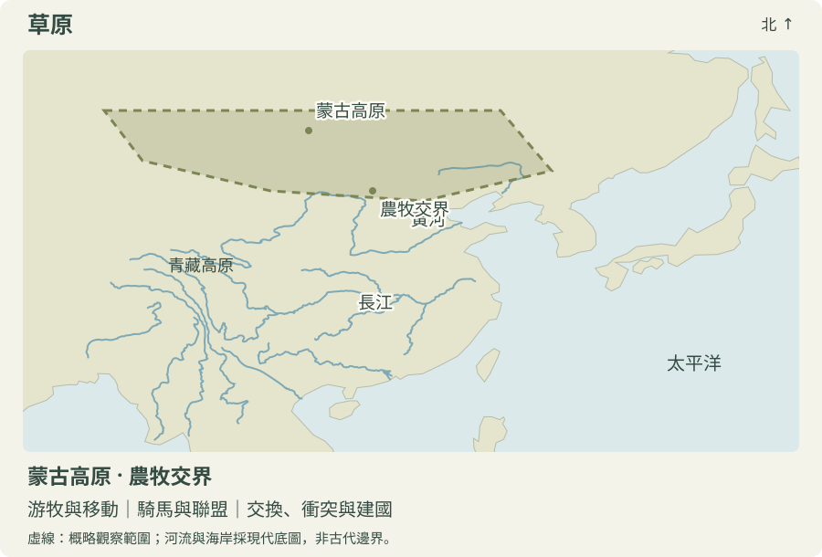
開啟地圖 ↗ 圖 10–4 · 草原
從蒙古高原到農牧交界，移動本身就是重要的生活條件。 牧群、騎馬交通與政治聯盟串起廣大空間。草原與農耕社會既交換物資，也競爭資源與權力；不要只把它當成入侵的方向。
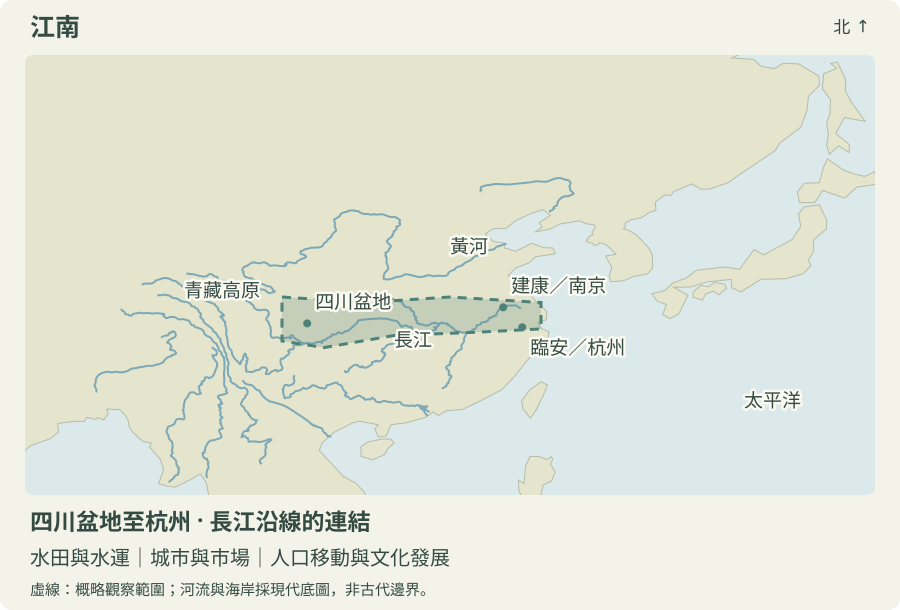
開啟地圖 ↗ 圖 10–5 · 江南
以長江中下游為主要觀察入口：平原、湖泊與水網相互連接。 水田、水運、人口遷入與城市市場，讓南方逐漸成為重要的經濟與文化舞臺。它與中原有自己的發展節奏，也經歷對峙與整合。
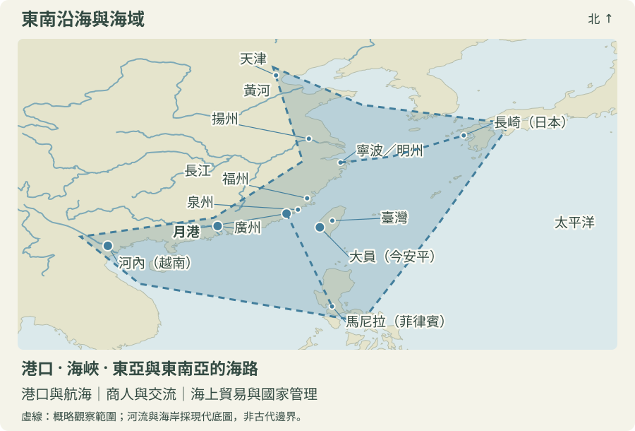
開啟地圖 ↗ 圖 10–6 · 東南沿海與海域
由沿海港口向外看，海峽與海路把東亞、東南亞連在一起。 商人、貨物與知識沿海移動；國家的貿易管理和民間往來又不一定同步。江南水運與沿海港口相接，因此兩個觀察範圍會交疊。
四圖為本課程原創地理示意；海岸與河流底圖採Natural Earth公有領域資料。色帶為概略觀察範圍，會交疊，也會隨歷史問題調整；不是四個固定、互斥的行政區或政權疆界。現代海岸與河流只用於定位，不呈現古代河道變遷；海路箭線僅表示連結方向。
這個觀看方式從哪裡來？ 本課程以宮崎市定的《中國史》為較早的參考，再借助《岩波新書．中國的歷史》的區域視野，重新思考分期。閱讀時不只問「現在是哪一朝」，也問「哪個區域正在改變，哪些關係仍在延續」。
渡邊信一郎在《中華的成立》提出，把政治事件、制度與日常生活的不同變化節奏放在一起看。書系由多位作者分卷書寫；中原、江南、草原與海域的歷史，會在同一時段並行、交會與衝突。
較早參考：宮崎市定著，邱添生譯，《中國史》（臺北：華世出版社，1980）；書目依教師提供，四區說法的原文頁碼尚待核對。直接參考：渡邊信一郎著，詹慕如譯，《中華的成立》（聯經，2021）及書系共同編輯前言。可讀出版社公開的渡邊信一郎原著節選 與書系作者前言、目錄及介紹 。四圖文字為課程導讀歸納，不是學者逐字引文。
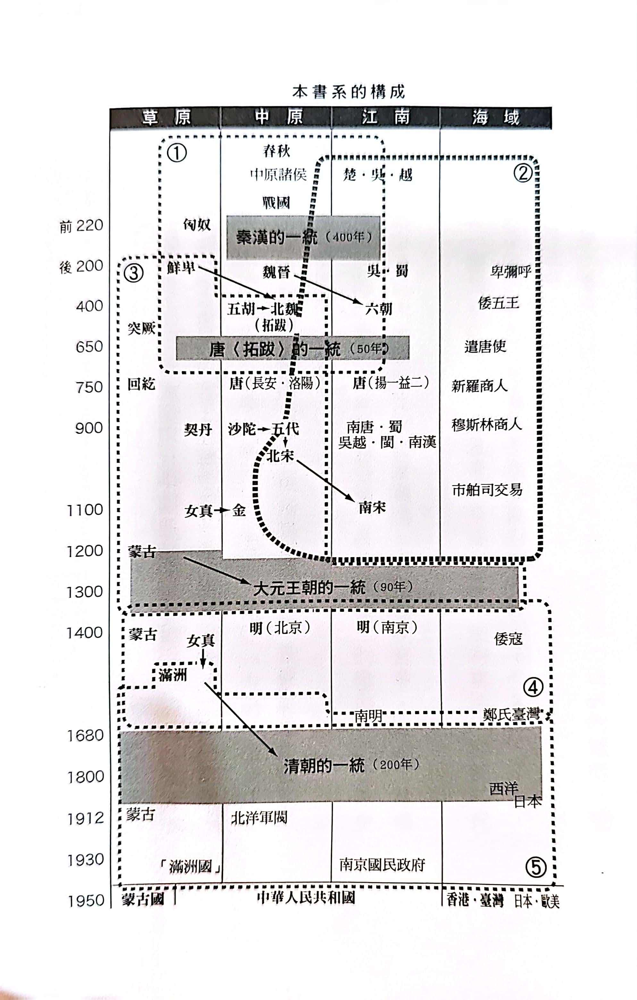
開啟原圖 ↗ 圖 10–7 · 本書系的構成
同一個時間，四個區域可以有不同的歷史。 縱向看變化，橫向看並存，再看它們怎麼連在一起。
使用者提供之《岩波新書．中國的歷史》書系構成圖照片，依指定收錄；圖亦見《中華的成立》書系編輯前言。原圖著作權屬原權利人，非本課程原創。圖中年代、用語及灰帶長度依原圖保留。
延伸閱讀 這張圖怎麼讀？先沿著一欄走，再橫過去看看 想像你沿著「中原」這條路往下走：秦漢之後，有魏晉、北魏、唐，再到宋。但在同一高度往旁邊看，江南與草原正在走自己的路，海上也有人持續往來。時間相同，不代表各地的故事相同。
讀圖先看左側年代：越往下越接近今天。「前220」是西元前，「後200」是西元後；這張圖沒有等比例刻度，不要用線段長短計算年代。
再看上方四欄：草原、中原、江南、海域。它們代表觀看歷史的空間；海域還包括商人、使節與海上交換，不是一個王朝。
接著找灰色橫帶：秦漢、唐、元、清的廣域統一被特別凸顯。看看每條帶跨了哪些欄，就能追問：不同區域如何被連結？這不是說灰帶以外完全沒有統一；灰帶內的各地也不會因此變成相同。
最後看箭頭與①至⑤的虛線框：箭頭提示政治力量或中心的移動，虛線框則對應五卷書的敘述範圍，不是國界。書與書的年代會重疊，正好讓我們從不同區域重看同一段歷史。
你可以試一次：在十二世紀的位置橫著讀，找出金與南宋，再看看海域的交換。若只背朝代順序，哪一部分故事會被略過？
依使用者提供的10/6課程整理HTML收錄。文字來源：Google 文件10/6段落 ；相關課程入口 。
教師備查 · 過往課程 全球中世紀｜過往課程索引 已依帳號搜尋、無標籤筆記與課程內連結整理；每份教材保留原文入口。
班級課程 專題與相關教材 開啟我的 HackMD 總覽 ↗